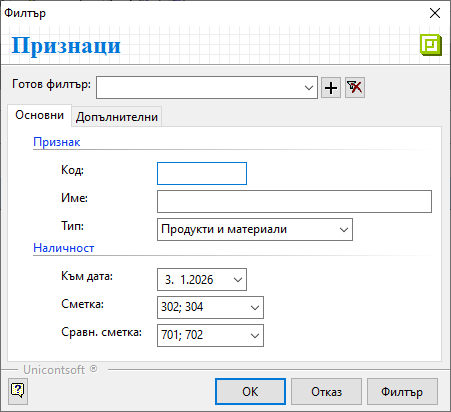
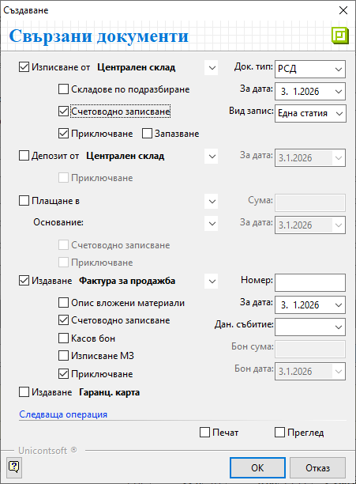

Документи за продажба#
Въведение#
Търговската операция по продажба на стоки и услуги от страна на контрагент Потребител на продукта се регистрира в системата чрез вътрешнофирмен документ Продажба. В него се описват всички продукти и договорените с клиента условия на сделката.
С приключването на документ за продажба възниква вземане от клиента.
Системата дава възможност за генерация и на останалите свързани документи по сделката - складови, касови, данъчни и други. Това може да стане в момента на валидиране на продажбата или допълнително.
Тези операции могат да бъдат извършени от един потребител или от различни отдели в организацията.
Нов документ за продажба#
1. Създаване
Продажбите се регистрират в системата от Търговска система » Документи за продажба. Това може да стане с десен клик върху списъка с документи и Нов документ, с клавишна комбинация Ctrl+N или от бутона в лентата с инструменти. Всеки от предложените варианти отваря празна форма за въвеждане на данни за продажба.
2. Попълване на реквизити
В раздел Основни се попълват реквизитите в секции Общи, Собствени и Купувач.
Док. Тип - Полето отваря падащ списък за избор на тип документ.
По подразбиране системата попълва тип Продажба-Документ за продажба. Настройката по подразбиране може да бъде променена в Номенклатури » Типове документи.Док. No - Полето съдържа номер на документа.
То остава празно и с приключване на продажбата системата ще обзаведе пореден номер според настройките в Номератори.Док. дата - Системата предлага текуща дата за документа. При необходимост може да бъде коригирана.
Дан. събитие - Мое да бъде указана различна дата на данъчното събитие.
Основание за прилагане - Чрез реквизита се определя видът на сделката.
Системата обзавежда полето с основанието, настроено по подразбиране. То може да бъде променено от падащия списък. Основанията за прилагане се настройват предварително от Номенклатури » Референтни номенклатури.
Поле ДДС показва процент ДДС, който съответства на избраното основание аз прилагане.
Плащане - В полето се посочва начинът на плащане, договорен с клиента.
Системата обзавежда полето с настройката по подразбиране. Тя може да се дефинира отделно за всеки контрагент. Освен това за системата може да се настрои запомняне последен начин на плащане…Падеж - Показва договорения с клиента падеж на плащане.
Системата обзавежда тези полета автоматично, когато за клиента има дефинирани настройки за отложено плащане и за начин на плащане.
Търговец - Полето показва персона, която отговаря за бизнес отношенията с избрания клиент. Може да се обзавежда автоматично при настроен отговорен търговец за контрагента.
Съставил - Реквизитът се обзавежда с имената на служителя, създал документа.
Обект - В полето може да бъде указан обект на Потребител на продукта. Реквизитът е водещ при номериране на документите за продажба. Настройката се дефинира в Администрация » Номератори и е различна за всеки обект.
Полетата за избор на персона и обект се обзавеждат автоматично, когато за потребителя в системата предварително са направени необходимите настройки.
Контрагент - В полето се отваря форма Контрагенти за избор на клиент.
Останалите полета в секция Купувач ще се обзаведат спрямо настройките на избрания контрагент.
Ако търсеният контрагент не фигурира в списъка, може да бъде въведен на момента с десен клик и Нов контрагент.
{kind=link}
От поле Продукт/материал на реда за нов запис се въвежда списък с продукти за продажба. Това може да стане чрез попълване на код, баркод (вкл. сканиране) или наименование. Друг вариант е чрез форма за избор Продукти и материали. Тя се отваря с бутона в края на полето.
Формата има няколко раздела за избор на продукти. Всеки от тях дава различна алтернатива за добавянето на продукти.
Раздел Продукти и материали представя пълен списък с въведените номенклатури с продукти. В колона Разполагаемо кол. могат да се проследят свободните за продажба количества, а в Наличност в осн. мярка - физическите наличностите в склад.
Данните в двете полета се обзавеждат спрямо избрания Склад в лента Бърз филтър.
{kind=link}
Раздел Признаци представя всички въведени като счетоводни признаци номенклатури.
В колона Салдо се вижда разполагаемото количество за продуктите в счетоводния склад. В колона Разполагаемо се вижда разликата между наличното количество и фактурираното, но неизписано количество.
Данните се визуализират след филтриране на списъка по следния начин:

Раздел Редове на документи показва всички продажби на избрания клиент с детайли за продукти, количествата, цени и други.
{kind=link}
Продуктите се маркират от избрания раздел. С бутон Избор се добавят в продажбата.
Количествата по продукти се въвеждат в поле Количество.
При работа с партиди, те се попълват чрез поле Партида като отделни редове.
В полето Мярка системата дава възможност за указване на мерна единица.
Падащият списък с мерки може да варира. Той съдържа настроените за продукта основна мерна единица и фасети на мерки.
Ценовите условия се дефинират чрез реквизити Цена, Цена с ДДС и ТО%.
Цена и Цена с ДДС съдържат единичната цена съответно без ДДС и с ДДС. Достатъчно е да се попълни едно от тези полета. Системата ще изчисли и попълни автоматично другото.
Цените в документа могат да се променят ръчно или с прилагане на ЦЛ. Текущо прилагане е достъпно от поле Ц. листа (в лентата Бърз филтър) и бутона вдясно Прилагане ценова листа.
ТО% е полето, в което може да се попълни търговска отстъпка за избран продукт.
Отстъпката в документа може да се променя ръчно или чрез прилагане на схема с ТО. Това става от поле Схема и бутона вдясно Прилагане схема отстъпки.
Цените и отстъпките се попълват автоматично, когато за текущия клиент предварително се дефинират ЦЛ и схеми ТО% по подразбиране.
3. Приключване
За валидиране на продажбата се избира бутон Приключен от лентата с инструменти. Това извежда форма Свързани документи. Чрез нея могат да се извършат останалите операции:

Изписване от (склад) - Полето се маркира, ако стоката е изпратена от склада и трябва бъде извадена от складовите наличности.
Док. тип - В полето се избира тип складов документ.
По подразбиране системата предлага РСД-Разходен складов документ.Складове по подразбиране - Опцията указва да се вземат предвид настройките за склад по подразбиране на всеки продукт.
Системата ще генерира отделни документи, в които продуктите се разпределят по склад.За дата - Избира се дата, която системата да попълни като Док. дата в складовия документ.
Счетоводно записване - Чрез опцията се указва генерация на счетоводен запис към складовия документ.
За да се обзаведе коректно счетоводната статия, Автоматичен осчетоводител трябва да бъде настроен предварително.Вид запис - От полето се избира формата на счетоводния документ.
При избран вариант Една статия системата създава счетоводен документ с една статия. В него продуктите (признаците) са обединени в един списък.
При Ред-статия се генерира счетоводен документ с множество статии. За всеки продукт се създава отделна счетоводна статия.Приключване - С поставена отметка указва генериране на складовия документ с автоматично приключване.
Когато липсва отметка, документът се генерира в състояние на редакция.Запазване - Опцията указва генериране на складов документ в редакция с резервиране на продуктите в избрания склад.
Депозит от (склад) - опция за избор на склад и създаване на депозитна разписка, съдържаща настроен амбалаж за продукти;
За дата - Избира се дата, която ще се попълни като Док. дата в депозитната разписка.
Приключване - При поставена отметка депозитната разписка се генерира и приключва автоматично.
Когато няма отметка, свързаният документ се генерира в състояние на редакция.
Плащане в (каса) - Чрез опцията се избира каса и се създава приходен касов ордер. Използва се, когато има плащане в брой, с карта или подобно (при определени настройки).
Опцията е автоматично изключена при плащане по договор или банков път.Сума - В полето се записва фактически получената сума от клиента.
Основание - От падащия списък се избира основание за плащане, което се попълва в касовия документ.
За дата - Въвежда се дата, с която се попълва Док. дата в касовия документ.
Счетоводно записване - С поставена отметка се указва генериране на счетоводна статия към касовия документ.
За да се обзаведе коректно статията, Автоматичен осчетоводител трябва да бъде настроен предварително.Приключване - С поставена отметка се указва генериране на касов документ с автоматично приключване.
Когато няма отметка, свързаният документ се генерира в състояние на редакция.
Издаване (тип документ) - Опцията се маркира за издаване на данъчен документ към продажбата.
От падащия списък се избира тип на данъчния документ.
Системата обзавежда полето автоматично при дефинирани настройки за клиента.Номер - Полето остава празно и системата дава пореден номер на данъчния документ. Настройките за автоматична номерация се дефинират предварително в Администрация » Номератори.
При издаване на нов данъчен документ датата не трябва да се променя с по-ранна от тази на последно валидирания. Това е от съществено значение за хронологията на данъчните документи.
Счетоводно записване - Чрез отметка се потвърждава генерация на счетоводен запис към данъчния документ.
Касов бон - Указва генерация на счетоводен запис за касовия бон.
Ако за Плащане в (каса) вече е избрано Счетоводно записване, тук опцията Касов бон не се маркира.
Бон сума - Полето се обзавежда със сума на касовия бон.
Бон дата - В полето се попълва дата на касовия бон.
Приключване - С поставена отметка се потвърждава генерацията на данъчен документ с автоматично приключване.
Когато няма отметка, свързаният документ се генерира в състояние на редакция.
Печат или Преглед - Отваря се форма за избор на шаблон.
При избрана опция Печат документът се разпечатва директно с избрания шаблон. При опция Преглед документът се отваря на екран преди отпечатване.[ОК] - Бутонът потвърждава всички маркирани опции. Системата генерира избраните свързани документи и валидира продажбата.
4. Запис и изход
Чрез бутон [Запис и изход] в лентата с инструменти документът се записва и формата се затваря.
При приключване документът се записва автоматично. В този случай бутонът единствено затваря формата.
Реквизити#
В раздел Основни:
Док. Тип – полето отваря списък за избор от типове документи;
По подразбиране системата предлага Продажба-Документ за продажба.Док. No - указва номер на документа;
Ако остане празно, системата автоматично попълва пореден номер при приключване на документа спрямо настройките в Номератори.Док. дата - указва дата на текущата продажба;
По подразбиране в нов документ системата предлага текуща дата.Дан. събитие - указва дата на данъчното събитие;
Основание за прилагане - отваря падащ списък за избор на вида на сделката;
Основанията са предварително дефинирани от Номенклатури » Референтни номенклатури.ДДС - показва процент ДДС, настроен за избраното основание за прилагане;
Тип известие - този реквизит се активира и използва единствено за коригиращи документи;
Плащане - отваря списък за избор на начин на плащане;
Падеж - указва дата за падеж на плащане по продажбата;
Дата на падеж може да се обзавежда автоматично при дефинирани настройки за контрагента.Търговец - отваря списък за избор на служител, който пряко отговаря за взаимоотношенията с текущия контрагент;
Съставил - отваря списък със служители за избор на перосна, съставила документа;
Полето се попълва автоматично с настройките на текущия потребител.Обект - отваря падащ списък за избор на обект;
Полето се попълва автоматично с настройките на текущия потребител.Контрагент – в полето се отваря форма за избор на клиент от списък Контрагенти;
Ако търсеният контрагент не фигурира в съществуващия списък, системата позволява въвеждането му в момента.Адрес - указва адрес по регистрация на избрания контрагент;
ДДС / Ид. No. - указва ДДС номер, Булстат или друг идентификатор за избрания контрагент;
Получил - отваря списък за избор на лице, което ще получи документа;
Обект - отваря за избор от списък с настроените за контрагента обекти;
От реда за нов запис се обзавежда списък с продукти. Колоните, които съдържа, са:
Поверителност - дава информация за активирани Поверителност на цени и/или Поверителност на документ;
No. - пореден номер на запис на реда;
Миниатюра на продукт/материал - показва настроеното за продукта изображение по подразбиране;
Код продукт/материал - полето се обзавежда с настроения основен код за избрания продукт;
Баркод на продукт/материал - полето се обзавежда с баркод за продукта в избраната мярка;
Вендор код на продукт/материал - полето се обзавежда при настроен външен код на продукт, предоставен от контрагента;
Вендор име на продукт/материал - полето се обзавежда с настройка за име на продукт, предоставено от контрагента;
Тип на продукт/материал - полето се обзавежда с настроения реквизит Тип за продукт на реда;
Продукт/материал - отваря форма за избор Продукти и материали;
Допълнителен текст - поле за въвеждане на свободен текст с уточнение, описание или др., който може да се показва при печат;
Забележка - поле за въвеждане на свободен текст с уточнение за продукта на ред;
Партида - указва партида за избрания на реда продукт;
От бутона в края на полето се отваря форма с наличните партиди от продукта.Дата на годност на партида - указва дата на годност за партида на реда;
Страна на произход на партида - указва страна на произход за партида на реда;
Доставна партида - в полето може да се въведе допълнителна партида за продукт на реда;
Акциз за осн. мярка - показва акциза, въведен за партидата на продукта;
АДД на партида - показва въведената АДД на партида, с която е наличен продуктът на реда;
Сериен номер на партида - указва общ сериен номер за партида на реда;
Серийни номера - указва сериен номер за продукт на реда;
Количество - в полето се попълва количесто за продукта на реда;
Заявено кол - обзавежда се със стойностите от колона Количество в свързан документ за заявка;
Доставено кол. - указва доставеното количество, което се визуализира при печат с шаблон Пикадили стокова разписка;
Мярка - отваря списък за избор на мерна единица от настроените за продукта;
Цена - поле за попълване на единична цена без ДДС;
Основание за прилагане - отваря падащ списък за избор на основание за прилагане;
Всички основания трябва да бъдат настроени предварително в Номенклатури » Референтни номенклатури.Данъчна група - показва данъчна група, настроена за продукта на реда;
ДДС ставка - показва ДДС ставка, настроена за продукта на реда;
ДДС вкл. в цената - указва включване на ДДС в цената на продукта от реда;
Продукти с включен в цената ДДС не могат да участват във фактури.Цена с ДДС - указва единична цена с ДДС;
ТО% - указва търговска отстъпка в проценти;
МД% - показва отстъпката, изчислена по формулата: МД% = 100 * Discount / (100 - Discount);
Крайна цена с ТО% - показва цена без ДДС в национална валута след приспадната търговска отстъпка;
Крайна цена с ДДС - показва крайна цена в национална валута с включен ДДС;
Крайна цена с ТО% и ДДС - показва цена с ДДС в национална валута след приспадната търговска отстъпка;
Осн. мярка - показва мерна единица, настроена за основна;
Отношение на мерки - показва фасети на мерки за допълнителната мерна единица;
Количество в основна мярка - показва количество за продукта на реда в основна мерна единица;
Крайна цена в осн. мярка с ТО% - показва единична цена без ДДС с включена отстъпка за продукта в основна мерна единица;
Валута - указва валута по редове на документа;
Валута на документа се променя от раздел Допълнителни. С това системата обзавежда валута и по редовете в Основни.Курс - указва валутен курс за избраната валута;
Бруто тегло - показва бруто тегло за количеството от продукта на реда;
Нето тегло кг - показва нето тегло в килограми за количеството от продукта на реда;
Бруто обем - показва бруто обем за количеството от продукта на реда;
Ст-ст валута - показва обща стойност без ДДС за количеството продукти на реда;
Разполагаемо кол. - поле с информация за свободни количества на склад;
Стойност - показва обща стойност на реда в национална валута;
Обща стойност с ДДС - показва обща стойност с ДДС за цялото количество от продукта на ред;
ТО за реда - показва обща сума на търговска отстъпка в национална валута;
ДДС за реда - показва обща сума на ДДС за цялото количество от продукта на реда;
Обща ТО с ДДС - показва обща сума на отстъпка с ДДС за цялото количество от продукта на ред;
Включен акциз - показва сума на акциза за избраното количество от продукта;
Наличност - показва информация за налично количество - общо или за избран склад (вкл. резервирани количества);
Запазени - показва резервираните количества за продукт на реда;
Издължено кол. - показва изписаното от склад количество за продукт на реда;
Цена складов док. - показва среднопретеглена цена на продукта от свързаните складови документи;
Кол. от свързани скл. документи - показва изписаното от склад количество за продукта;
Цена по ц. листа - показва настроената цена от приложената в документа ценова листа;
Промоционална ц. листа - показва цена при наличие на промоция към приложената в документа ценова листа;
ТО% по схема отстъпки - показва процент на търговската отстъпка от приложената в документа схема ТО%;
Производител - отваря форма за избор на производител от списък Контрагенти;
Продукт за трансформация - отваря форма за избор на събирателен продукт за трансформация при фактуриране на продажби;
Група за трансформация - полето позволява попълване на събирателна група за трансформация при фактуриране на продажби;
Начална дата на прихода - избор на дата, от която стартира приходът;
Крайна дата на прихода - избор на дата, към която приходът приключва;
Период на прихода - отваря списък за избор от различни типове периоди за прихода;
Заключване на реда - позволява заключване на реда за корекции;
Група - показва група, към която е настроен продуктът на реда;
Разлика с количества от РСД - попълва се автоматично с разликата между количествата в продажбата и в свързания РСД;
Стандартна опаковъчна единица - показва дефинираната Мярка за Стандартна опаковъчна единица в Администрация » Настройки;
Потребител създаване - информация за потребител, добавил текущия ред в документа;
Дата създаване - дата и час на добавяне на текущия ред;
Потребител последна модификация - потребителско име на направилия последните корекции в данните на реда;
Дата последна модификация - информация за дата и час, когато са направени последните изменения в данните на текущия ред;
Като отделни колони се визуализират също настроените дименсии, фасети и вендор кодове за продукти и дълготрайни активи.
В раздел Допълнителни:
Реквизити: Дименсии - Тази секция се обзавежда, ако за документи за продажба има дефинирани дименсии от меню Номенклатури » Потребителски дименсии.
Реквизити: Доставка
Дата на доставка - поле с уговорена дата на доставка;
Час на доставка - указва час за доставка;
Предефиниран адрес - предварително настроен адрес, от който се попълват елементите на адреса на доставка;
Държава - указва държава, към която се доставя продажбата;
Град/населено място - указва населено място за доставяне на продажбата;
Пощенски код - указва пощенския код на населеното място за доставка;
Улица / Квартал - указва улица или квартал на място на доставка;
Номер (Улица) - указва номер на улица от адреса на място на доставка.
Полето остава празно, ако е избран квартал.Блок (Квартал) - указва номер на блок от адреса на място на доставка;
Полето остава празно, ако е избрана улица.Вход (Квартал) - указва вход на блок от адреса на доставка;
Полето остава празно, ако е избрана улица.Етаж (Квартал) - указва етаж от адреса на доставка;
Полето остава празно, ако е избрана улица.Апартамент (Квартал) - указва номер на апартамент от адреса на доставка;
Полето остава празно, ако е избрана улица.Пояснение - допълнителна информация към адреса на доставка (разположение на входа, звънец, портиер и т.н.);
GPS координати на адрес на доставка - указва GPS координати на адреса на доставка;
Телефон - попълва се телефонен номер за контакт;
Използва се при генериране на куриерска товарителница.Ел. поща - поле с имейл на контрагента;
Използва се при изпращане на документа по ел. поща.
Ако полето остане празно, се използва имейл от настройките в титуляра на документа (контрагент, обекти или персони).Условия на доставка - указва условията на доставка, съгласно кодовете на Incoterms;
Използва се при печат на пакетажен лист, валутна проформа и валутна фактура в бланки с концентрация.Статус на доставка - указва статус на процеса по доставка;
Реквизити: Транспорт - общи
Дата на експедиция - указва очаквана дата на експедиция;
Вид транспорт - отваря списък за избор на вид транспорт за доставка;
Различните видове транспорт трябва да се настроят предварително от Референтни номенклатури.Транспортна фирма - отваря форма Контрагенти за избор на транспортна фирма, която ще извърши доставката;
Товарителница - поле с номер на товарителница към доставката;
Използва се при генериране на осчетоводяване по сметки за наложен платеж.Транспортно средство - указва вид на транспортното средство за доставка;
Дата на предаване - указва дата на фактическото предаване на стоката;
Реквизити: Транспорт - дестинация
GPS координати на товарене - указва GPS координати на мястото, където стоката е натоварена;
GPS координати на приемо-предаване - указва GPS координати на мястото, където е извършено приемо-предаване на стоката;
Реквизити: Транспорт - данни за автомобила и шофьора
Шофьор - указва шофьор от транспортна фирма, който ще извърши доставката;
Втори шофьор - указва втори шофьор от транспортната фирма, който ще извърши доставката съвместно с първия;
Реквизити: Плащане
Дата на падеж - указва дата за падеж на остатъчно плащане по продажбата;
Начин на плащане - указва начин на плащане на остатъчна сума по продажбата;
Сума - указва сума на уговорено остатъчно плащане по продажбата;
Валута - указва валута на сделката;
Курс - указва курса на избраната валута;
Банкова сметка - указва банкова сметка, която ще се отпечата на данъчния документ за продажба;
Код на транзакция - полето се попълва при плащане с карта или онлайн плащане;
Указва код на транзакция от банков терминал или от система за онлайн плащания, както ще се отчете плащането в извлечението от банката оператор.Система за online плащания - указва оператор, през който е извършено онлайн плащането (online payment gateway) като ePay.bg, EasyPay, PayPal и др.;
Промо ваучер - указва промо ваучер за допълнителна отстъпка по програма за лоялност;
Реквизити: Складов документ
Дата на събиране - указва очаквана дата за събиране на стоки при издължаване от склад;
Склад за изпълнение - избор на склад, от който ще се издължат количествата;
Премахване на запазени количества - указва начина на отписване на запазените количества;
При приключване на складов документ и избрана опция Да в свързана продажба, запазените количества се премахват за цялата продажба.
Реквизити: Данъчен документ
Данъчен документ - указва тип данъчен документ, с който е желателно да се отчете продажбата;
Контрагент - указва контрагент, който ще е титуляр във фактурата.
Използва се единствено при настроен тип данъчен документ 1 - Фактура.Адрес - поле с адрес на контрагент при печат на фактура;
Използва се единствено при избран тип данъчен документ 1 - Фактура.ДДС номер - указва ДДС номер (ИН по ДДС) за печат на фактура;
Използва се единствено при избран тип данъчен документ 1 - Фактура.Идент. номер - указва идентификационен номер (ИН), както ще се отпечата на фактура;
Използва се единствено при избран тип данъчен документ 1 - Фактура.Обект - указва обект на контрагента, за който ще се издаде фактура;
Използва се единствено при избран тип данъчен документ 1 - Фактура.Получател - указва лицето, което ще получи фактурата;
Използва се единствено при избран тип данъчен документ 1 - Фактура.
Реквизити: Допълнителни
Основание за известие - указва основание за дебитното/кредитното известие, както ще се отпечатва на оригинала;
Място на сделката - указва място на сделката, както ще се отпечатва на оригинала;
От меню Администрация » Настройки може да се дефинира стойност по подразбиране.Допълнителен ДДС - указва стойност на допълнителен ДДС за изравняване на Обща стойност с ДДС в документа;
Папка - избор на папка за групиране в счетоводството;
Канал за продажби - указва канала за продажби, по който се реализира сделката;
Използва се в справки Марж и рентабилност на приходите от продажби и Продажби (реализация).
Реквизити: СУПТО
Търговски обект - отваря списък за избор на търговски обект, в който се извършва продажбата;
Работно място с ФУ - указва фискално устройства за генериране на Уникален номер на продажба (УНП);
Генериран УНП - полето се обзавежда с генерирания УНП;
Реквизити: POS система
Фискален бон - полето съдържа номер и дата/час на фискален бон, издаден от ФУ на POS терминала;
POS терминал - указва каса на POS терминала, от който е направена продажбата;
Реквизити: Външни системи
Входящ стоков номер - указва входящ стоков номер за обмяна на документи по EDI система;
Поръчка номер - полето с номер на поръчка за обмяна на документи по EDI система;
Поръчка дата - указва дата на поръчка за обмяна на документи по EDI система;
Приемателен протокол номер - указва номер на приемателен протокол за обмяна на документи по EDI система;
Приемателен протокол дата - указва дата на приемателен протокол за обмяна на документи по EDI система;
Клиентски код - указва клиентски код на титуляра на документа във външни системи, getti карта;
Собствен код - указва код на контрагента-издател на документа във външни системи, Доставчик номер в търговска верига по EDI система;
Реквизити: Други
МОЛ доставчик - отпаднал реквизит, който не се използва никъде в системата;
МОЛ купувач - отпаднал реквизит, който не се използва никъде в системата;
ЛООСО купувач - отпаднал реквизит, който не се използва никъде в системата;
ДДС сметка - отпаднал реквизит, който не се използва никъде в системата;
Машина - указва машина, за която се отнасят дейностите и материалите в продажбата;
В раздел Списъци:
СписъциНаправления - В тази секция се показва списък с всички продукти, въведени в текущата продажба. Те могат да бъдат разпределени като приход към структурни центрове на себестойност, обект/проект и/или финансова структура.
Прикачени файлове - Системата дава възможност от реда за нов запис вдясно да се добавят прикачени файлове. Това става от поле Файл, в което се отваря форма за избор Медия каталог. Той включва предварително настроените папки през Номенклатури » Медия каталог.
Счетоводни записвания - В тази секция системата показва всички счетоводни записвания, генерирани за свързаните документи към текущата продажба.
В раздел Връзки с документи:
Този раздел не съдържа реквизити за настройка. В него системата осигурява пряк път до свързаните документи. Ако продажбата е валидирана и към нея има генерирани свързани документи, те се визуализират отделно по тип в съответната папка.
От тук документите могат да бъдат отворени за преглед и редакция.
Свързани статии#
Номенклатури
Номератори
Попълване на списъци
Връзки между документи
Вграден калкулатор
Състояния на документите
Знаци в документите